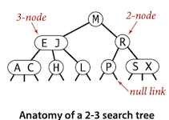
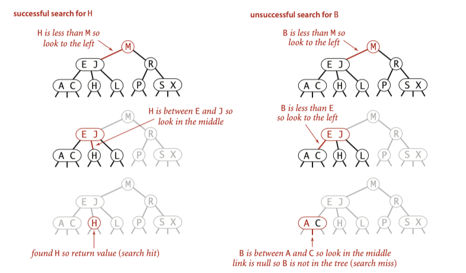

Topic 6: Balanced Search Trees¶
Binary Search Tree Balanced Search Trees
Binary Search Tree have poor worst-case performance. Balanced Search Trees are guaranteed to be logarithmic, no matter what sequence of keys is used to construct them.
2-3 Search Trees¶
Definition
A 2-3 search tree is a tree that is either empty or
- A 2-node, with one key (and associated value) and two links, a left link to a 2-3 search tree with smaller keys, and a right link to a 2-3 search tree with larger keys
- A 3-node, with two keys (and associated values) and three links, a left link to a 2-3 search tree with smaller keys, a middle link to a 2-3 search tree with keys between the node’s keys, and a right link to a 2-3 search tree with larger keys
As usual, we refer to a link to an empty tree as a null link.
A perfectly balanced 2-3 search tree is one whose null links are all the same distance from the root.

Search¶

To determine whether a key is in the tree, we compare it against the keys at the root. If it is equal to any of them, we have a search hit; otherwise, we follow the link from the root to the subtree corresponding to the interval of key values that could contain the search key. If that link is null, we have a search miss; otherwise we recursively search in that subtree.